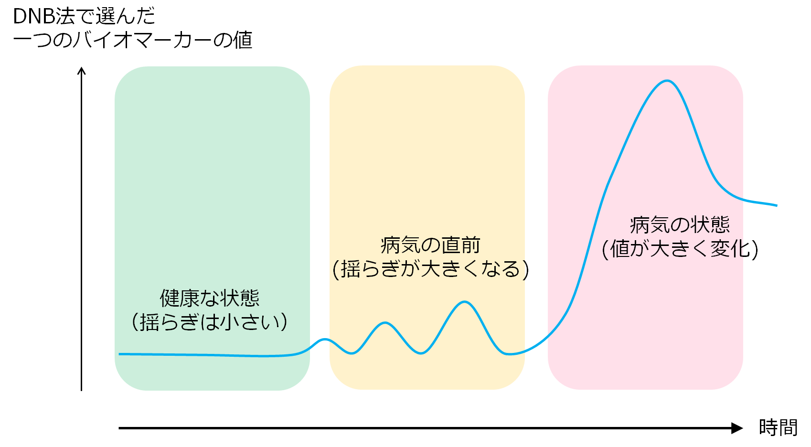
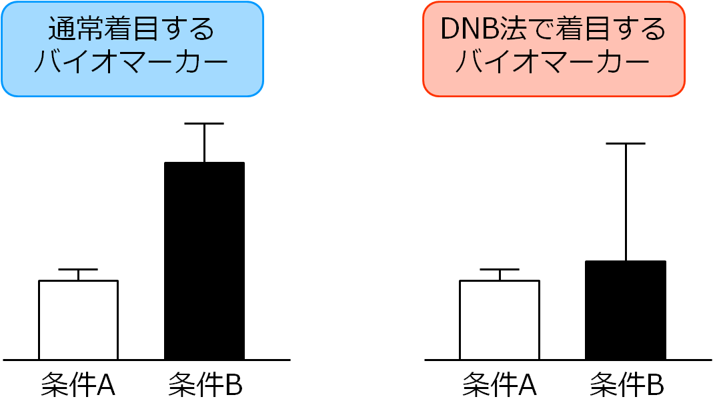
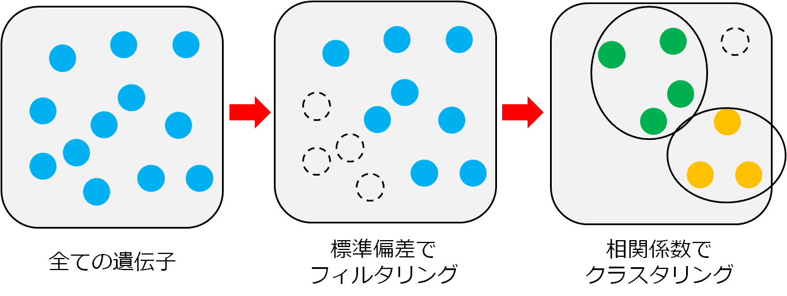
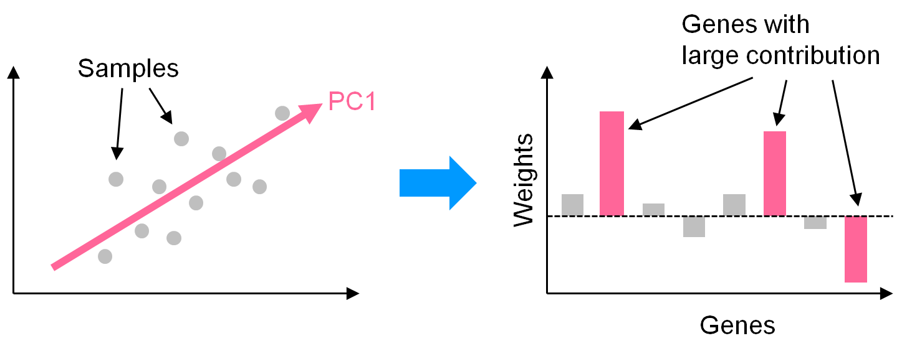
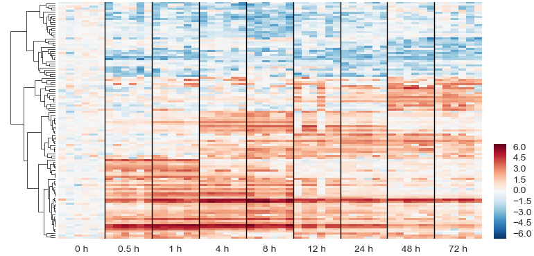
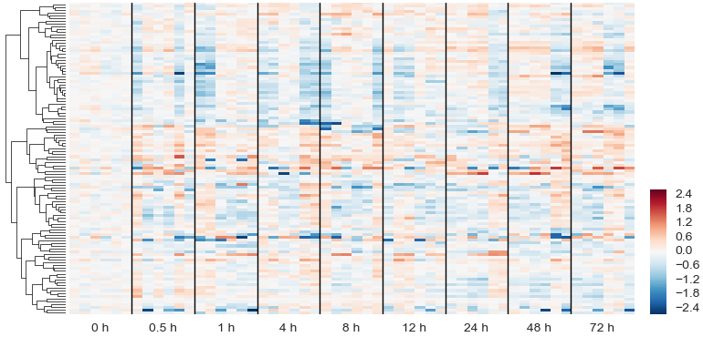

動的ネットワークバイオマーカーとは?
動的ネットワークバイオマーカー (Dynamical Network Biomarker, DNB) 法とは、数学のアイデアから生まれた新しい解析手法です。
この手法を使うと、病気になる前の段階でその予兆を検出したり、沢山の遺伝子やタンパク質の中から、病気の発症メカニズムに関係する重要な因子を発見したりするのに役立つと期待されています。
基本的なアイデア
生態系や金融市場などの複雑システムでは、何か大きな変化が起こる直前に揺らぎが増えることがよくあります。これは、システムを正常な状態に保つ力（回復力）が低下し、外乱に対し弱くなっているのが一因です。
同じことが病気の発症前にも当てはまるのではないかと考え、作り出された解析手法がDNB法です。

通常の解析法と異なり、DNB法では平均値ではなく分散・標準偏差の変化に着目します。

さらに、複数のバイオマーカー候補がある場合、注目している期間で動きのパターンが似たもの (相関が強いもの) のみを取り出す点にも特徴があります。
理論的な背景
システムの時間発展が以下の式で表されるケースを考えます:
\[
x_{t+1} = f(x_t) + \xi_t.
\]
ここで $x_t\in\mathbb{R}^n$ は時刻 $t$ の状態変数、$f:\mathbb{R}^n\to\mathbb{R}^n$ は非線形関数、$\xi_t\in\mathbb{R}^n$ は $\mathcal{N}(0,\sigma^2I_n)$ に従う微小なノイズです。ノイズが無い場合の安定固定点を $a$ で表し、その点におけるヤコビ行列を $J\in\mathbb{R}^{n\times n}$ で表します。$J$ が正規行列の場合、その固有値 $\lambda_1,\ldots,\lambda_n$ および固有ベクトル $s_1,\ldots,s_n$ を用いて、$x$ の定常分布の共分散行列は以下で表されます:
\[
\mathrm{Cov}(x) = \sigma^2\sum_{k=1}^n\frac{s_k s_k^*}{1-|\lambda_k|^2}.
\]
ある固有値 $\lambda_k$ の絶対値が1に近いとき、対応する固有ベクトル $s_k$ の特に絶対値が大きな成分が共分散行列に強い影響を与えることが分かります。
解析の手順
大きく2つの方法があります。
1つ目の方法では、(1) 全遺伝子の中から標準偏差の大きなものを取り出し、(2) 残ったものを相関係数を使ってクラスタリングして、候補遺伝子を取り出します。

もう一つの方法では、データ行列を主成分分析にかけ、第一主成分への寄与度が高かったものを候補遺伝子として取り出します。

適用例
以下の例は、公開データ (GSE2565) を解析した結果です。通常の発現変動遺伝子解析 (上) では、異なる条件間で系統的に発現量が変化する遺伝子を取り出すのに対し、DNB法 (下、発現変動遺伝子は除外) では、同じ条件内でサンプル毎に発現量が異なる遺伝子を取り出します。


参考文献
- L. Chen, R. Liu, Z.-P. Liu, M. Li, K. Aihara, "Detecting early-warning
signals for sudden deterioration of complex diseases by dynamical
network biomarkers," Scientific Reports, 2:342 (2012).